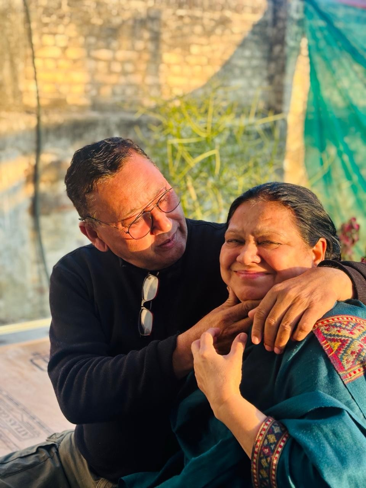
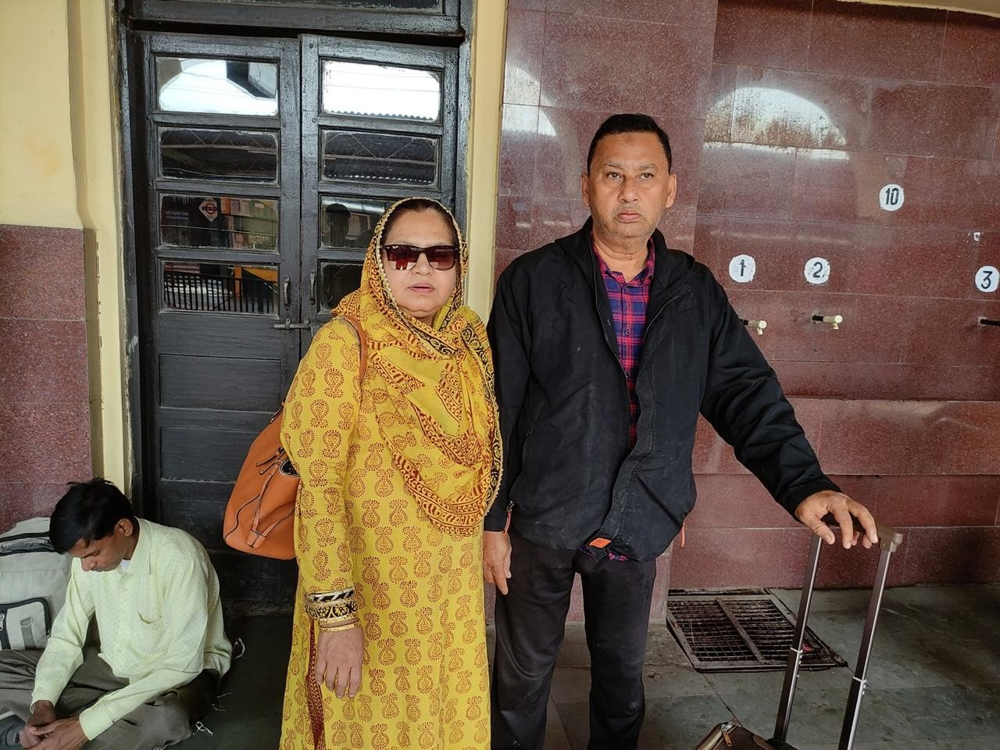
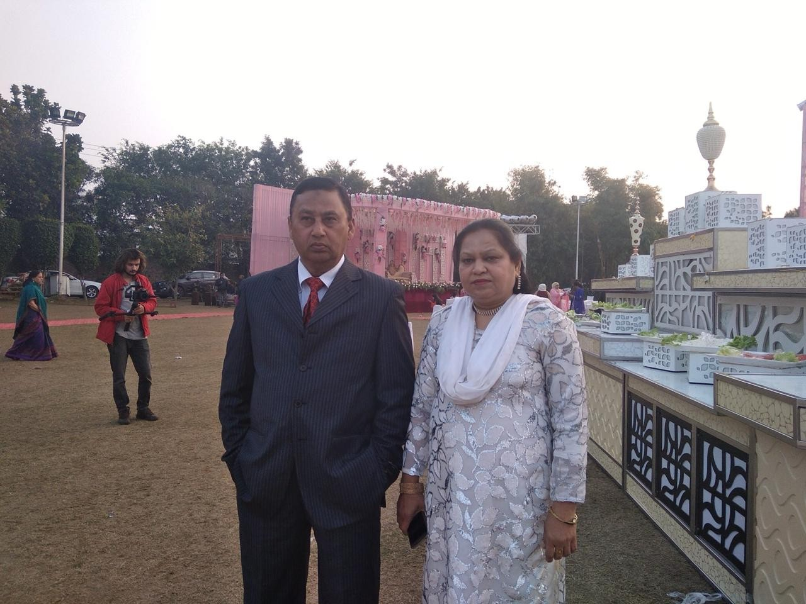
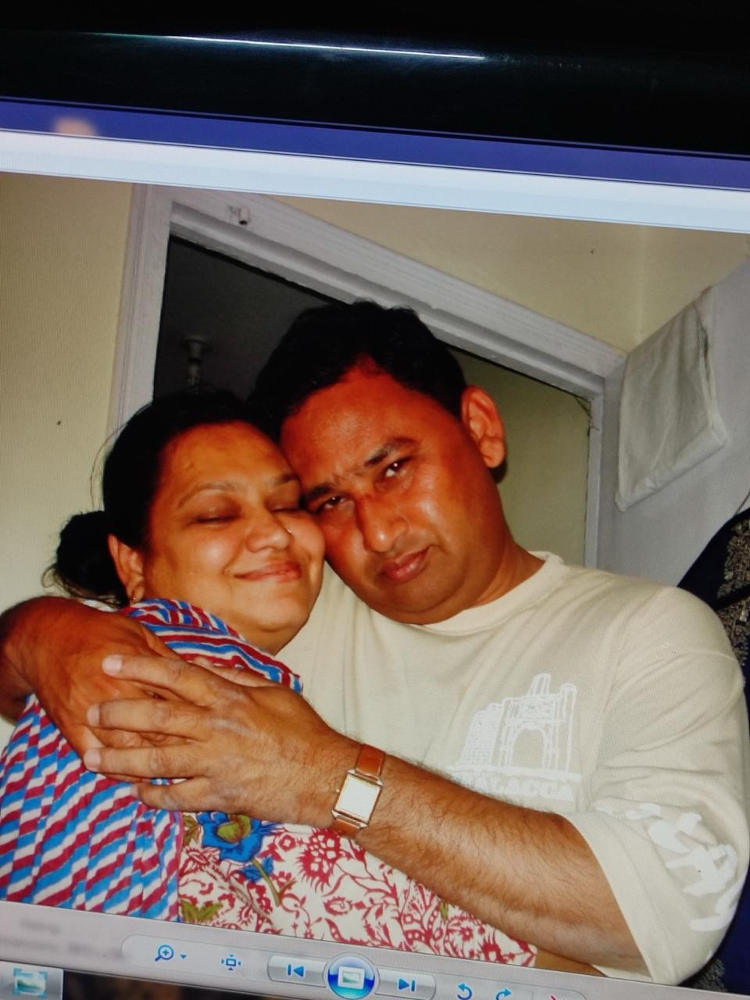

25
Of Love • Togetherness • Family
Happy 25th Wedding Anniversary
Amma & Abba
12 August
“A beautiful journey of love, patience, companionship, sacrifice and countless blessings.”
Silver Jubilee
25
پچیس برس، ایک ساتھ، ایک سفر، ایک محبت۔
A Few Precious Frames
Their Story, In Pictures



Our Greatest Blessing
ہماری سب سے بڑی نعمت
آپ دونوں نے صرف ایک گھر نہیں بنایا، بلکہ ہمارے لیے ایک ایسی دنیا بنائی جہاں محبت، دعائیں، حفاظت، تربیت اور اپنائیت ہمیشہ موجود رہی۔ آپ دونوں کا ساتھ ہمارے لیے اللہ تعالیٰ کی بہت بڑی نعمت ہے۔
جو کچھ بھی ہم آج ہیں، وہ آپ دونوں کی محبت، محنت اور دعاؤں کی بدولت ہیں۔ اللہ آپ کا سایہ ہمیشہ ہمارے سروں پر قائم رکھے۔
A Prayer From The Heart
آپ دونوں کے لیے ایک خاص دعا
یا اللہ! میرے پیارے والدین کے اس خوبصورت رشتے کو ہمیشہ اپنی رحمت، حفاظت اور برکت کے سائے میں رکھ۔
یا اللہ! جس محبت، خلوص اور وفا کے ساتھ انہوں نے اپنی زندگی کے یہ پچیس سال ایک دوسرے کے ساتھ گزارے ہیں، ان کے دلوں میں وہ محبت ہمیشہ قائم و دائم رکھ، بلکہ آنے والے ہر دن کے ساتھ اس محبت، الفت، شفقت اور احترام میں مزید اضافہ فرما۔
یا اللہ! ان کے درمیان ہمیشہ سکون، اطمینان، صبر، برداشت اور ایک دوسرے کے لیے آسانی پیدا فرما۔ جب زندگی میں کوئی مشکل آئے تو انہیں ایک دوسرے کے لیے مضبوط سہارا بنا، اور جب خوشی آئے تو انہیں ایک دوسرے کے ساتھ وہ خوشی بانٹنے کی توفیق عطا فرما۔
یا اللہ! ان کے گھر کو ہمیشہ امن، سکون، محبت، خوشیوں اور اپنی بے شمار رحمتوں سے آباد رکھ۔ ان کے گھر سے ہر پریشانی، ہر مصیبت، ہر نظرِ بد، ہر حسد اور ہر ایسی چیز کو دور فرما جو ان کے سکون اور محبت کو متاثر کرے۔
یا اللہ! میرے والدین کو صحت، عافیت، لمبی اور بابرکت زندگی عطا فرما۔ ان کے جسم کو صحت مند، دل کو مطمئن، ذہن کو پرسکون اور زندگی کو خوشیوں سے بھر دے۔ ان کی ہر جائز خواہش کو اپنے فضل و کرم سے پورا فرما۔
یا اللہ! ان کی ان تمام قربانیوں کو قبول فرما جو انہوں نے اپنی اولاد اور اپنے خاندان کے لیے کیں۔ ان کی محنت، ان کی دعائیں، ان کی محبت، ان کی پریشانیاں اور ان کے ہر اچھے عمل کو اپنی بارگاہ میں قبول فرما اور انہیں اس کا بہترین اجر عطا فرما۔
یا اللہ! ان کے بچوں کے لیے ان کا سایہ ہمیشہ سلامت رکھ۔ ہمیں ان کی قدر کرنے، ان کی خدمت کرنے، ان کا احترام کرنے اور ان کے لیے ہمیشہ باعثِ خوشی بننے کی توفیق عطا فرما۔ ہماری زندگیوں میں بھی وہ برکتیں عطا فرما جو ہمارے والدین کی دعاؤں سے وابستہ ہیں۔
یا اللہ! میرے والدین کے درمیان کبھی ایسی غلط فہمی پیدا نہ ہونے دینا جو ان کے دلوں میں دوری پیدا کرے۔ اگر کبھی کوئی رنجش ہو تو اسے محبت میں بدل دینا، اگر کبھی کوئی غم ہو تو اسے سکون میں بدل دینا، اور اگر کبھی کوئی مشکل آئے تو اسے ان کے لیے آسان فرما دینا۔
یا اللہ! ان دونوں کو ایک دوسرے کا بہترین ساتھی، بہترین دوست اور ایک دوسرے کے لیے سکون کا ذریعہ بنائے رکھ۔ ان کے دلوں میں ایک دوسرے کے لیے ہمیشہ نرمی، محبت، عزت اور شفقت قائم رکھ۔
یا اللہ! ان کی زندگی کے آنے والے سال ان گزرے ہوئے پچیس سالوں سے بھی زیادہ خوبصورت، پُرسکون، خوشگوار اور بابرکت بنا دے۔ انہیں ایک ساتھ خوش رہنے، مسکرانے، ایک دوسرے کا خیال رکھنے اور زندگی کے ہر خوبصورت لمحے کو ایک ساتھ محسوس کرنے کی توفیق عطا فرما۔
یا اللہ! ان کی زندگی کو ہر نقصان، ہر آزمائش اور ہر بری چیز سے محفوظ فرما۔ ان کے رزق میں برکت عطا فرما، ان کے گھر میں خیر عطا فرما، ان کے دلوں میں ایمان کی روشنی بڑھا دے اور انہیں اپنی رضا کے راستے پر ہمیشہ قائم رکھ۔
یا اللہ! ان کی زندگی کے اختتام تک ان کا ساتھ محبت اور عزت کے ساتھ قائم رکھ، اور جب بھی ان کی زندگی کا آخری وقت آئے تو ان کے ایمان، اعمال اور دلوں کو اپنی رضا کے مطابق پائے۔
یا اللہ! انہیں دنیا میں بھی خوشیاں عطا فرما اور آخرت میں بھی اپنی رحمت سے نواز۔ ان کے گناہوں کو معاف فرما، ان کی خطاؤں سے درگزر فرما، ان کی نیک دعاؤں کو قبول فرما اور انہیں جنت الفردوس میں اعلیٰ مقام عطا فرما۔
یا اللہ! میرے والدین کو ہمیشہ ایک دوسرے کے لیے سکونِ قلب بنائے رکھ، ان کے چہروں کی مسکراہٹ کبھی کم نہ ہو، ان کے دل کبھی محبت سے خالی نہ ہوں، اور ان کے گھر سے برکت کبھی ختم نہ ہو۔
اے ہمارے رب! ان دونوں پر اسی طرح رحم فرما جس طرح انہوں نے محبت اور شفقت کے ساتھ ہماری پرورش کی۔ ان کے ہر آنے والے دن کو گزشتہ دن سے بہتر فرما، ہر آنے والے سال کو گزشتہ سال سے زیادہ بابرکت فرما، اور ان کے اس خوبصورت رشتے کو اپنی خاص رحمت کے ساتھ ہمیشہ قائم رکھ۔
آمین یا رب العالمین۔ 🤲🏻
A personal dua written from a child's heart for their parents — not a quotation from the Qur'an or Hadith.
25 Years Down…
Forever To Go.
اللہ آپ دونوں کا ساتھ ہمیشہ قائم رکھے، آپ کے دلوں میں محبت، آپ کے گھر میں سکون، آپ کی زندگی میں برکت اور آپ کے ہر آنے والے دن میں خوشیاں عطا فرمائے۔
آمین۔ 🤲🏻
Happy 25th Wedding Anniversary, Amma & Abba ❤️
12 August